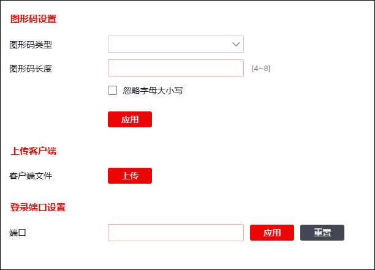
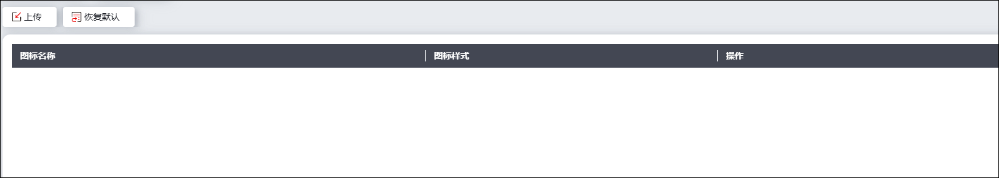
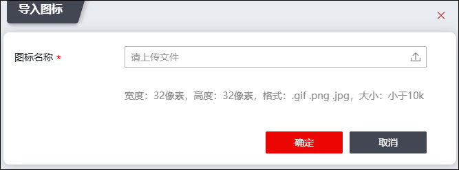

l全局基本设置
选择 ，激活“全局基本配置”页签，如下图所示。

Ø图形码设置
参数 |
说明 |
|---|---|
图形码类型 |
选择图形码类型，可选项包括：数字、小写字母、大写字母、大小写字母混合、小写字母与数字混合、大写字母与数字混合、大小写字母和数字混合。 |
图形码长度 |
设置图形码长度。取值范围：4-8位。 |
忽略字母大小写 |
设置是否忽略字母大小写。 |
参数设置完成后，点击【应用】按钮，完成图形码设置。
Ø上传SSLVPN客户端
点击『上传』，在弹出的窗口中选择需要上传的客户端文件，选择完成后，点击【确定】按钮。
|
²系统支持客户端的上传更新，替换生产设备自带的客户端（不建议）。 |

Ø登录端口设置
设置登录SSLVPN的端口号。
修改端口号后，点击【应用】按钮使配置生效，点击【重置】，端口号可恢复为系统默认的443端口。
l图标管理
选择 ，激活“图标管理”页签，如下图所示。管理员可以查看当前SSLVPN使用的各个图标。

1）上传图标
点击『上传』，弹出“上传图标”窗口，如下图所示。

点击“”，按要求上传图标文件后，点击【确定】按钮，完成图标的上传。
2）恢复默认
点击『恢复默认』，会清空当前所有自定义图标条目，恢复默认状态。